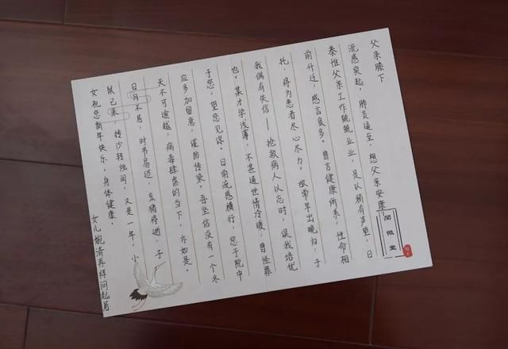
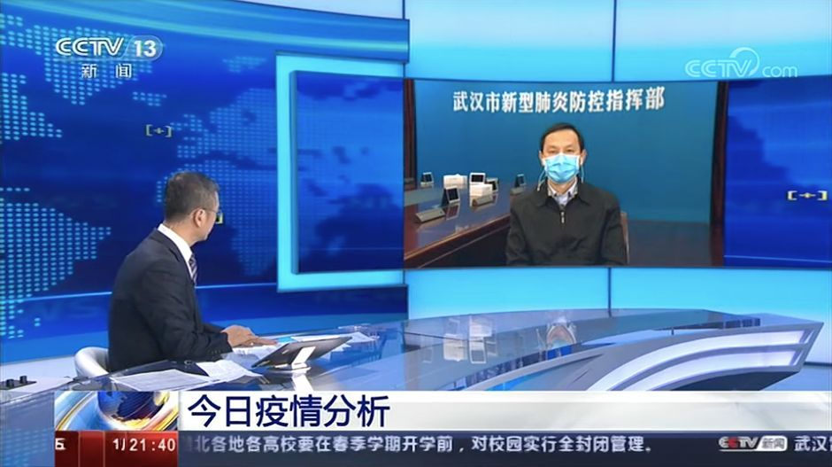

武汉的两个“纠结”
原文链接 备份链接 非常时期，武汉成了全国人民挂念、祈福的城市。封城后，武汉人民的真实生活是什么样？ 正和岛自1月26日起特别推出《叶青：我在武汉疫区的第N天》专栏。叶青是一位定居武汉40年的市民，也是一名学者和官员。接下来的一段时间，他 …

非常时期，武汉成了全国人民挂念、祈福的城市。封城后，武汉人民的真实生活是什么样？
正和岛自1月26日起特别推出《叶青：我在武汉疫区的第N天》专栏。叶青是一位定居武汉40年的市民，也是一名学者和官员。接下来的一段时间，他会用笔记录下亲身经历的、观察到的武汉，为此他还专门外出到大街上、到超市里，获得一手真实的信息。这将是一份宝贵的史料。感谢他，我们得以更真切地感知到武汉疫情。让我们一起为武汉加油！
作者：叶青 中南财经政法大学教授、博导 湖北省统计局副局长 正和岛蓝色岛邻
封面：红星新闻
来源：正和岛案例（ID：zhenghedaoanli）

武汉死亡33例
1月31日，正月初七。阳光灿烂。
31日，全国新增确诊病例2102例，新增重症病例268例，新增死亡病例46例（湖北省45例、重庆市1例）。
截止月31日，全国累计报告确诊病例11791例，累计死亡病例259例，累计治愈出院病例243例，共有疑似病例17988例。
31日，湖北新增病例1347例（其中：武汉市576例、黄石市41例）。全省新增死亡45例（其中：武汉市33例、黄石市1例、荆州市1例、鄂州市3例、孝感市3例）。
截至1月31日，湖北省累计病例7153例（其中：武汉市3215例、黄石市209例、十堰市177例、襄阳市347例、宜昌市276例、荆州市287例、荆门市251例、鄂州市227例、孝感市628例、黄冈市726例、咸宁市206例、随州市304例），死亡249例（其中：武汉市192例）。

暗访是最有效的方式
从1998年我当武昌区政协常委、2003年当全国人大代表起，就参加过不少检查。基本上都是合格的。因为准备的很充分，没有任何问题。因此，检查是在浪费时间。
暗访的机会又不多。
在“新型肺炎”时期，只有通过暗访才能够发现真正的问题。
30日下午3时许，江苏省委书记在前往南京市江宁区汤山街道葛巷村检查时，被几位老同志拦住，吃了“闭门羹”。
江苏新闻广播官方抖音号的视频记录了当时情形：
娄勤俭下车后，他问在村口负责把守的老同志：“村里现在有发热病人吗？”
一位老人回答说“没有。”
娄勤俭又问“现在村里不让进，是吧？”
老同志说“不让进。”
此时，旁边另一老同志补充说，“要是没有多少（什么）事情，你们也是（陌）生人，你们早点离开。”

娄勤俭很开心地表明了自身身份并欣慰地说，防控期间加强管理，就是要有这种铁面无私的工作作风，“看到你们这样严格管理，我就放心了。”
大爷的表现引发网民欢呼，声称“这大爷才是我们大爷。”
要是提前通知，省委书记肯定是一路绿灯。问题也发现不了。
形式主义、官僚主义害死人。
希望各级书记保持这种“微服私访”的作风。当年俞正声当湖北省委书记时，在双休，喜欢带上夫人、警卫、司机，到湖北各地“微服私访”。

医生的孩子
家长在教育小孩时，常说“人家的孩子”如何如何。
31日，一位医生的孩子的家书感动了中国。
“流感突起，肺炎逼至，想父亲安康……您于院中应多加留意，谨防传染。吾坚信没有一个冬天不可逾越，病毒肆虐的当下，亦如是。”

一个14岁的女孩给奋战在抗疫一线的医生父亲写了一封家书。她已经好多天没见到爸爸了。

这个女孩叫孙婉清，是一名中学生，成绩优异，聪明伶俐。在疫情肆虐的当下，她的处境与同龄人有些不同，因她的父母都是抗疫一线的医务工作者，她被迫独自“留守”。
用文言写成的200余字的家书，传递着孙婉清对父亲深情的问候、温暖的鼓励、迟来的歉意，以及对战胜这场疫情坚定的信心。
网上有视频：父亲教孩子，连哄带骂，恨不得“你是我老子”。
孩子懂事，大人就很轻松。孙婉清这样懂事的孩子，还需要父母督促她读书吗？
会用文言文表达，已经证明她是很智慧的孩子。成才是没有问题的，父母的任务就是要她多休息。
我的孩子31岁，很懂事，爱读书。前几天我说了，就是从小到大与我的本科、硕士、博士、博士后学生在一起，立志将来读博士。
我的教育理念是“让孩子跳起来摘得到桃子”。经过努力，可以成功即可。不要定超过努力的目标。在班上前五名即可。清华北大，我连门在哪都不知道。为什么要求孩子考上清华北大？
当时我是武昌区政协副主席，找找关系还是可以进入华师一附中。加上我是省民进副主委，华师一附中的民进支部我也认识。我在华师一附中还讲过一次公共课。
但是，我们认为，他进入华师一附中这种高材生集中的地方，会有挫败感。只要孩子爱读书，在一般学校就可以了。
因此，他的本科、硕士在华农，博士在武大。

马国强：武汉的几个重要时点
31日晚，央视《新闻1+1》节目中，白岩松连线武汉市市委书记马国强。

马书记讲了一些真心话。
白岩松问马国强这段日子以来一直用什么心态工作。马国强用了三个词：内疚、愧疚、自责。其实就是自责。
马国强回忆了疫情发生之后的几个重要时间点：
（2019年）12月27日，我们的医院发现几名患者，在医治过程中普通的抗生素不管用。正是由于他们的警觉，使得我们卫计部门开始要求武汉市所有医院上报是不是有类似的患者。
（2019年）12月30日、 31日，武汉市其他医院也有类似患者，所以我们上报了国家卫健委。这才有了国家卫健委派出指导组、专家组，来指导我们做这项工作。
1月12日、13日，又是一个重要时间节点。随着病例数的增加，特别是泰国曝出第一例从武汉去旅游的人确诊之后，我们采取了机场测温、高铁站测温等措施。
1月20日又是一个重要的转折点，李克强总理召开国务院常委会，国家卫健委把这次的新型冠状病毒肺炎界定为乙类传染病。
这几个时点，将会记入武汉的历史。功过是非，有人评说。
“如果我们能早一点采取措施，效果可能会更好。比如在12日、13日测温的那天，是不是能够采取像我们23日采取的控制飞机、高铁、汽车、轮渡的出行（措施）。我想如果那时候采取这种措施，可能疫情会有所缓解，不至于到像现在这种状况。”马国强表示。
这是真心话。
可惜的是，历史不能够重复再来。“非典”给中国官员上了一课，“新型肺炎”又会给中国官员上一课。特别是武汉的官员。

回家了
30日晚上，省委书记提出用包机把在国外的湖北人接回来。
31日上午，外交部发言人华春莹表示，考虑到近日湖北特别是武汉中国公民在海外遇到的实际困难，中国政府决定尽快派民航包机把他们直接接回武汉。
应外交部的要求，31日，民航局派出两架民航加班航班，由厦门航空执飞，分别从泰国曼谷、马来西亚哥打基纳巴卢运送滞留在当地的武汉籍旅客返回武汉。
31日20时54分、22时40分，两架飞机接连在武汉天河机场降落，199名滞留东南亚的湖北籍旅客回家了。
机场工作人员身穿防护服，在机舱门严阵以待。第一位走出的是26岁的李玮琦，他说:“很想回来，我不怕疫情。我要先自我隔离14天。”
李玮琦是1月6日到泰国曼谷学习泰拳的，原定2月10日返回武汉，随着疫情发展，当地取消了他的航班。
“今天中午看到外交部消息，半小时冲到机场买了票。一直在关注国内疫情，很想回来。我对武汉有信心。”他说。
非常时期，办事都是神速。
祖国不会忘记。

武汉的中央公园
29日在接受中新社记者独家专访时，湖北文联主席、茅盾文学奖和鲁迅文学奖双奖得主刘醒龙说：
无论完胜惨胜都要为武汉立座纪念碑，伫立在武汉的两江交汇之处的南岸嘴，因为这座城市的每一个人都是值得纪念的，都是为保卫这座城市而奋战到最后一分一秒的英雄。无论是留守城内的900万人，还是因故离开的500万人。
南岸嘴，也叫“中国角”——最大的江与最大的支流的交汇处，才配得上叫这个国家的名字。这是国际惯例。
这是德国角。德国角(Deutsches Eck)位于莱茵河和魔歇尔两河汇流突出的锐型岬角，远看像一艘乘风破浪的舰首。去年默克尔到武汉时，在长江大桥驻留，估计看到中国角了。
十年前，我就建议“中国角”留给张之洞，建立张之洞纪念园，因为有了张之洞在武汉18年的奋斗，才有仅次于“大上海”的“大武汉”的诞生，工业、进出口贸易仅次于上海。
刘醒龙的建议我非常赞成。建一座抗击新型肺炎纪念碑，记录这一段历史，也希望留点地方给张之洞。
汉口滨江公园里，有一座防汛纪念碑，临江而立，总高37米，碑心石上刻有毛泽东亲笔题词：“庆祝武汉人民战胜了一九五四年的洪水，还要准备战胜今后可能发生的同样严重的洪水。”纪念碑基座正面镌刻毛泽东诗词《水调歌头·游泳》，左右侧面为武汉人民抗洪抢险大型浮雕，构图完整，造型生动，气势雄伟。
美国纽约有一座中央公园。
那么，武汉的中央公园应该是两江交汇的南岸嘴。这个“中国角”是中国水陆交通的中心。

总结
武汉死亡33例，昨天是30例。虽然还是在增加，按照统计俗语来说，是增速放缓。
非常时期，暗访才能够发现问题。通过这次“新型肺炎”，建议减少调查次数，增加暗访比重。也是减少对基层的骚扰。
不管怎么样，历史会记住武汉人。特别是900万被“封”在市中心的武汉人。
作者：叶青，1962年3月出生，第十、十一届全国人大代表、国务院新闻办专家库专家，曾任中国民主促进会湖北省委员会副主任委员（2000-2017）。他被网民称为“中国最具个性官员”、“车改第一人”，曾荣获2007年度人民网十大社会责任博客、南方周末2011年两会“十大言者”、《南风窗》2012年十大公益人物、2019政务微博十年·先锋等等。
原文链接 备份链接 非常时期，武汉成了全国人民挂念、祈福的城市。封城后，武汉人民的真实生活是什么样？ 正和岛自1月26日起特别推出《叶青：我在武汉疫区的第N天》专栏。叶青是一位定居武汉40年的市民，也是一名学者和官员。接下来的一段时间，他 …
原文链接 备份链接 17 年前的那场公共卫生危机，未能及时公开疫情成为事后被诟病最多的问题之一，也成为中国疾病防控系统以及政府信息公开等许多方面的重要转折点。 而多年后，越来越多的互联网官方渠道成为了重大事件的定海神针，「官宣」被普遍接 …
原文链接 备份链接 【财新网】（记者 黄蕙昭）一则半夜发布的“封城”通告惊动全国，也拉开武汉肺炎防疫之战新势态。1月23日凌晨两点，武汉市新型冠状病毒感染的肺炎疫情防控指挥部通报宣布，今日10时起，武汉公交、地铁、轮渡、长途客运暂停运 …
原文链接 备份链接 【财新网】（记者 丁捷 综合）新型冠状病毒肺炎感染人数快速上升。根据国家卫健委数据，截至1月29日24时，中国累计报告确诊病例7711例，过去一天新增1737例确诊病例，西藏已出现首例确诊病例。新增死亡38例，新增疑 …
原文链接 备份链接 非常时期，武汉成了全国人民挂念、祈福的城市。封城后，武汉人民的真实生活是什么样？ 正和岛自1月26日起特别推出《叶青：我在武汉疫区的第N天》专栏。叶青是一位定居武汉40年的市民，也是一名学者和官员。接下来的一段时间，他 …